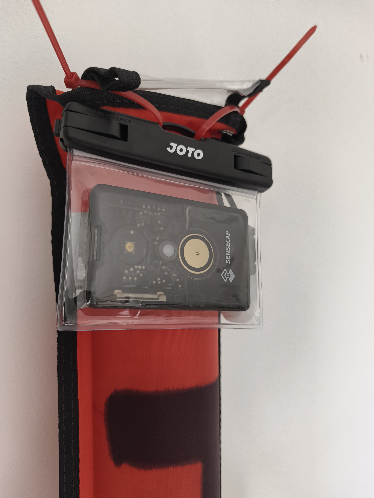
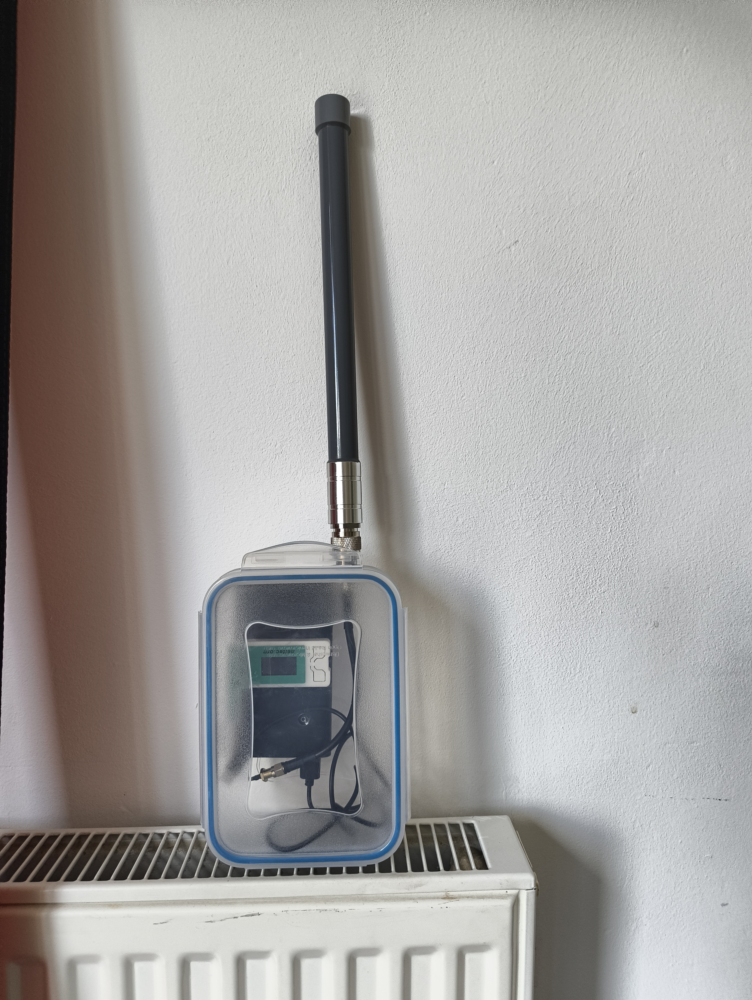

Proof of Concept · Field Report · May 2026
Tracking Divers at Sea
with a LoRa Mesh Network
Using Meshtastic, off-the-shelf hardware, and the public mesh backbone of southern England to give skippers real-time awareness of their divers at the surface.
A gap in awareness that matters
Recreational and technical diving has a surface support problem — but it's a nuanced one. When a diver surfaces and deploys their DSMB, the skipper has a visual reference. In calm conditions and good light, that's often enough. But visibility is not always good. Waves, sun glare, fading light, or a strong current that has carried the diver some distance from the expected ascent point can all make a DSMB very hard to spot from a moving boat.
The problem is that in the conditions where pickup matters most — low light, chop, drift — visual tracking is least reliable. Being able to transmit a diver's GPS position directly to the skipper's phone — and let the skipper navigate to a coordinate rather than scanning the surface — changes that equation meaningfully.
Existing electronic solutions are either expensive, proprietary, or both. Commercial diver tracking systems require dedicated hardware, subscription services, and often rely on acoustic underwater positioning — complex, fragile, and well outside the budget of a club dive boat.
What if you could use the public Meshtastic LoRa mesh to give the skipper real-time awareness of diver positions at the surface, using off-the-shelf hardware costing under £100 per diver?
Why Meshtastic and LoRa
Meshtastic is an open-source project that turns inexpensive LoRa radio modules into a self-forming, self-healing mesh network. Nodes discover each other automatically, relay packets on behalf of other nodes, and expose a clean API for custom applications. It runs on the 868 MHz band in Europe — a frequency that propagates well over open water and around obstacles.
LoRa (Long Range) modulation is specifically designed for low-power, long-range communication of small data payloads. A GPS coordinate, a node ID, and a timestamp fit comfortably in a single LoRa packet. Battery life on a small tracker can be measured in days. And critically — LoRa signals can travel tens of kilometres over open water with a clear line of sight.
Self-healing mesh
Nodes relay packets automatically. No single point of failure.
868 MHz propagation
Penetrates obstacles, hugs the water surface, reaches hilltop relays kilometres away.
LongFast channel
Optimised for range over throughput. The right choice when reachability is safety.
Public backbone
Opt into free relay infrastructure from hilltop nodes and home gateways across the country.
The LongFast channel — Meshtastic's default public channel — uses a spreading factor and bandwidth configuration optimised for range over throughput. It is the right choice for a maritime safety application where reachability matters more than privacy. A diver's GPS position is not sensitive data. What matters is that the packet reaches the skipper's phone, by whatever path through the mesh is available.
The prototype stack
The prototype used three categories of hardware, all running open firmware with no subscription or proprietary lock-in.
Diver nodes — SenseCAP T1000-E
The Seeed Studio SenseCAP T1000-E is a credit-card-sized GPS tracker (85×55×6.5mm, 32g) with an integrated LoRa radio, GPS, accelerometer, and a user-accessible button. It runs Meshtastic firmware natively, but a firmware modification was required to enable the detection of the button double-tap that can be mapped to an attention alert packet, allowing a diver at the surface to signal the skipper directly. It is rated IP65 and designed for asset tracking, but its compact form factor and low power consumption make it well suited for a wearable dive tracker. One T1000-E per diver.
Boat node — Heltec V3
The Heltec WiFi LoRa 32 V3 is a development board combining an ESP32-S3, a 868 MHz LoRa radio, and a small OLED display. It runs Meshtastic firmware and connects to the skipper's Android phone via Bluetooth LE. It sits on the RHIB and acts as the surface gateway — the node the skipper's app communicates with directly. Its range and mesh routing capability make it the hub of the local network.
Skipper node — Android application
A custom Android application built on the Meshtastic SDK. It connects to the Heltec V3 over BLE, listens for incoming position packets from registered diver nodes, and renders their positions on a map. Markers are colour-coded by packet freshness — green for a recent fix, amber for ageing, red for no signal. An attention flag on an incoming packet triggers an Android system notification with audio alert — signalling the skipper to look for that diver at the surface.
What it looked like in practice
Both nodes were built from off-the-shelf components with no custom PCBs or machined parts — a deliberate constraint to keep the PoC reproducible and cheap.


Working assumptions before the test
Before the first water test, the working assumptions were:
- The T1000-E would transmit reliably when at the surface with clear sky view
- The Heltec V3 on the boat, even without an elevated antenna, would receive packets within typical dive site distances (50–200m)
- The Meshtastic public mesh in coastal southern England would provide additional relay infrastructure
- The double-tap attention gesture would be a viable pickup signal — deliberate enough to avoid false positives, simple enough to execute at the surface
The key unknown was the DSMB integration. The plan was to attach the T1000-E to the DSMB so it would be lifted to the surface as the diver ascended. In practice, this proved to be the primary failure point of the first test.
First open water test — Swanage Bay, 5 May 2026
The test site was Swanage Bay on the Dorset coast, with a subsequent transit to the Kimmeridge / St Alban's Head area for the dive itself. Conditions were representative of typical recreational diving in the area — moderate chop, some tidal current.
Mesh discovery
The Heltec V3 on the boat, sitting on a seat without any mast or elevated antenna, began discovering nodes as soon as it powered up. By the end of the session the GPX export logged 30 distinct nodes making contact with the mesh.
The geographic spread of those nodes tells the real story of LoRa propagation over open water and high ground:
This confirmed the core hypothesis about LongFast and reachability: the public Meshtastic mesh in southern England is denser and more capable than expected, and opting into it as free relay infrastructure is the correct architectural choice for a safety application.
Attention alert workflow
The attention alert workflow functioned end-to-end. On surfacing, a diver removed the T1000-E from the water, held it above the surface to acquire a GPS fix, and executed a double-tap on the button. This is the equivalent of a diver signalling the skipper for pickup — not necessarily an emergency, but a clear, deliberate communication: I am here, come and get me. The alert packet propagated through the mesh and triggered an Android system notification with audio on the skipper's phone. The deliberate two-step — surface, then tap — proved to be the right UX. It prevents accidental triggers and makes the gesture intentional.
Node-to-node communication
Diver nodes were online and transmitting as soon as they cleared the water surface. Packet loss while submerged was total, as expected — seawater attenuates 868 MHz signals within centimetres. But the transition from submerged to transmitting was immediate on surfacing.
DSMB attachment
The T1000-E was housed in a dry bag cable-tied to the top of the DSMB tube. In any chop or current, the DSMB tips — and when it tips, the dry bag goes underwater with it. An underwater T1000-E does not transmit. This was the primary failure mode of the session.
The fix is a dedicated surface float that decouples the tracker's orientation from the DSMB. A flat EVA foam raft with a lead ballast strip on the bottom and the T1000-E recessed into the top face, tethered horizontally to the DSMB line, will self-right independently of DSMB orientation. The tether runs horizontally between the DSMB (floating vertically) and the EVA float (lying flat on the surface), so the T1000-E always has sky view regardless of what the DSMB does.
Second test hypotheses
The second test is scheduled for the following week with the revised float design. The specific hypotheses to validate are:
The bigger picture
Meshtastic was not designed for maritime diver tracking. It was designed as a general-purpose off-grid communication mesh. But the properties that make it useful off-grid — long range, low power, self-healing topology, open API, commodity hardware — map almost exactly onto what a diver tracking system needs.
The LongFast public channel is the right default for this application because reachability is safety. A diver's GPS coordinate propagating through a network of hilltop relay nodes and home gateways across southern England is not a privacy concern. It is the system working as intended.
That is the hypothesis. The first test proved the mesh. The second test will prove the float. After that, the question is whether this becomes something more than a PoC.